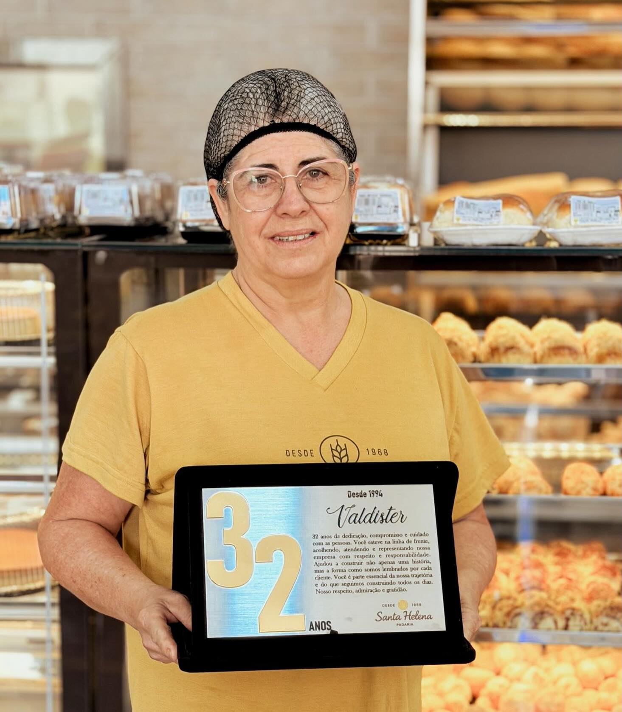
32 anos
Valdister
Na linha de frente desde 1994, acolhendo e atendendo.
Timóteo · Minas Gerais
Pão, pão de queijo, broa e bolo feitos aqui dentro, todo dia, na R. Sete de Setembro. A vitrine mudou. O jeito, não.
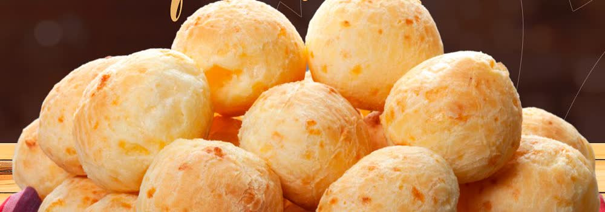
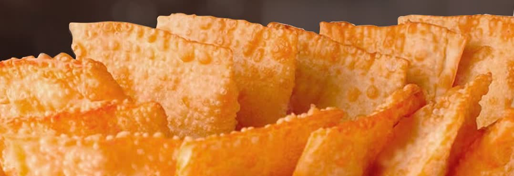
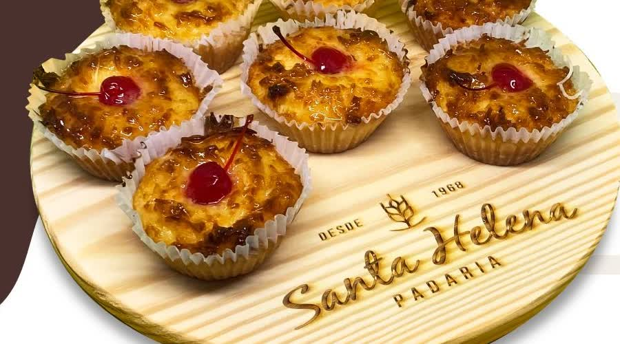
O que sai do forno
Boa parte é vendida por quilo e o preço muda conforme a semana — por isso não fica no site. Vem ver na loja que a gente pesa na hora.
O mais elogiado depois do pão. Sai do forno o dia inteiro.
“O pão não tem outro igual.” É o que mais aparece nas avaliações.
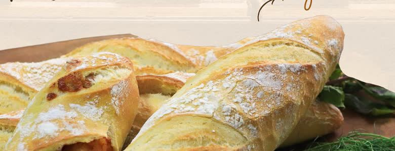
Casca dura, miolo macio. Sai quentinha na tarde.
Das que o cliente cita pelo nome quando fala da Santa Helena.
Tem gente que vem só por causa dele.
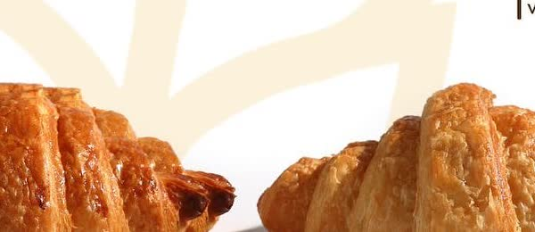
Folhado, amanteigado, pro café da manhã.
Com a cereja em cima, do jeito de sempre.
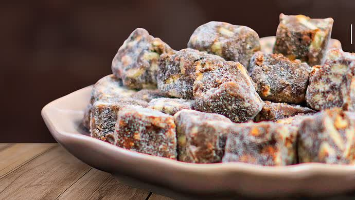
Aquele docinho depois do almoço.
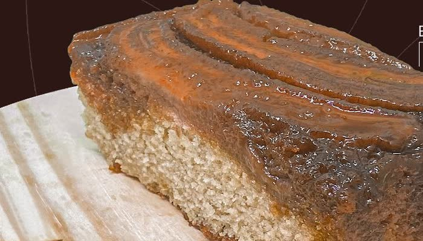
Banana caramelizada por cima. Some rápido.
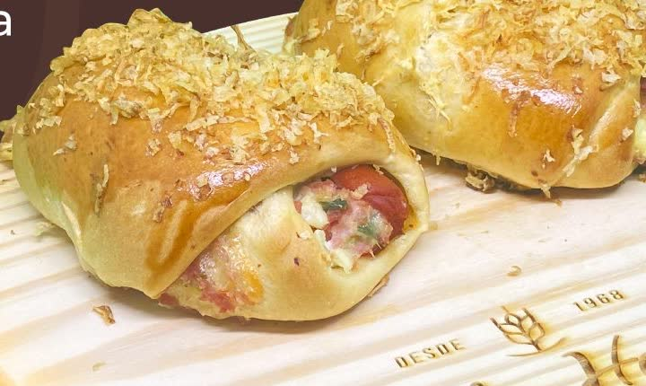
No pão da casa, coberto de batata palha.
Carne, frango, queijo e pizza. Ou um de cada.
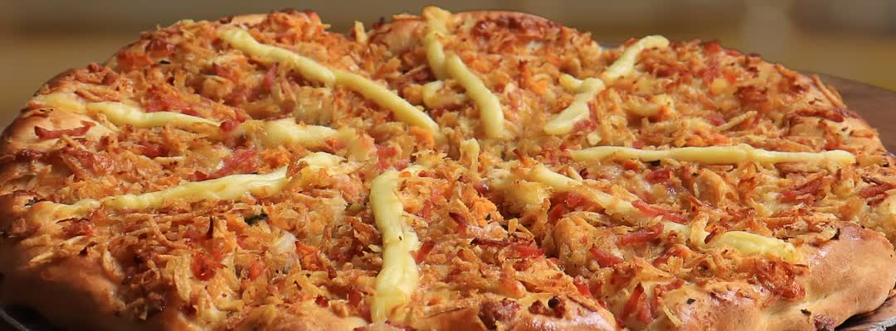
Frango, calabresa e mista, pra levar pro fim de semana.
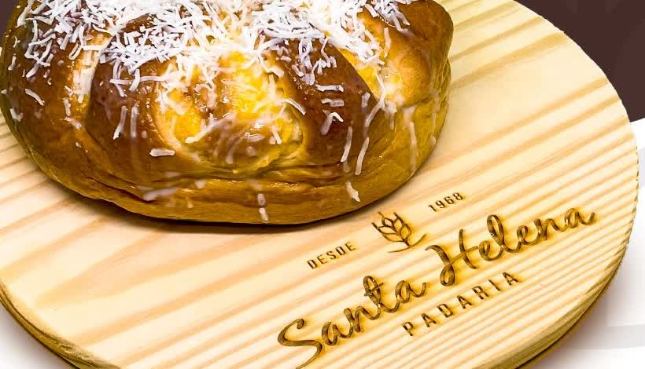
Coberta de coco ralado, pro café da tarde.
Maior, pra dividir. Ou não.
E ainda tem o básico do dia a dia — leite, café, açúcar e a mercearia do bairro. Você resolve tudo numa parada só.
Encomendas
Aniversário, batizado, almoço de domingo. A gente faz sob encomenda — chama no WhatsApp que a gente combina tamanho, recheio e o dia de buscar.
Fazer uma encomendaPrazo e detalhes a combinar. Atendemos de segunda a sábado, das 5h45 às 20h.
Nossa história
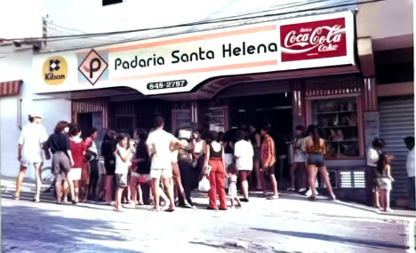
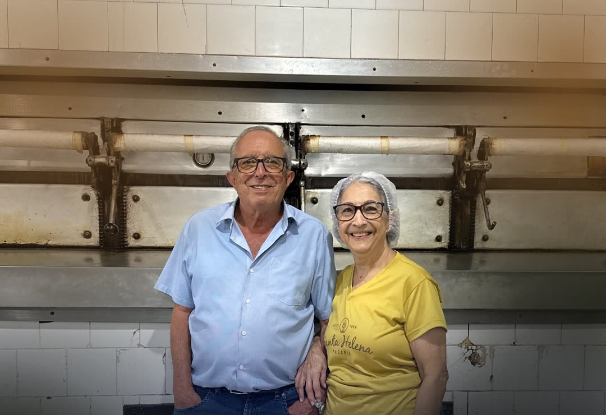
Quem começou tudo
Ele começou ainda menino, com as mãos na massa. Ela chegou depois pra somar — e é dela o olhar atento que segura o padrão até hoje. São quase 60 anos abrindo às 5h45.
Em 2026, a padaria foi uma das 45 empresas homenageadas pela Prefeitura de Timóteo pela contribuição ao desenvolvimento da cidade.
José Ari abre a Santa Helena na R. Sete de Setembro.
Valdister e Flávio entram pra equipe. Continuam até hoje.
Homenagem da Prefeitura e 4,9 de nota no Google, com 771 avaliações.
Quem faz
Aqui, camiseta branca é quem faz. Camiseta amarela é quem atende.

Na linha de frente desde 1994, acolhendo e atendendo.
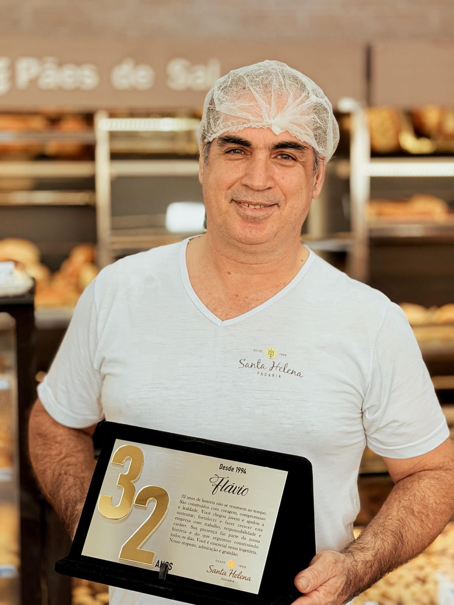
Chegou jovem, na produção. Ajudou a fazer a padaria crescer.
Os panificadores
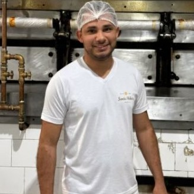
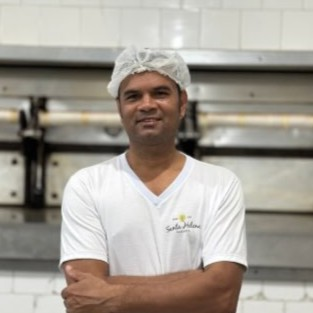
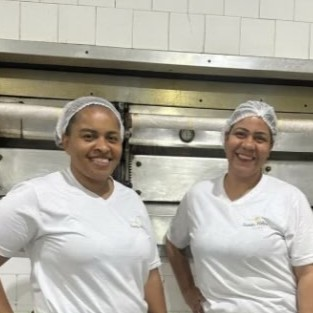
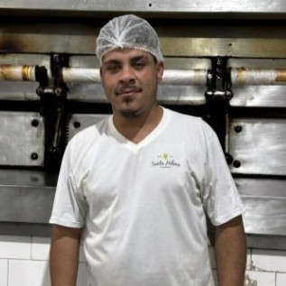
Nove pessoas na produção. Os nomes entram assim que o cliente confirmar.
O que dizem
“O pão não tem outro igual. A variedade de várias outras guloseimas e o excelente produto produzido são de deixar água na boca.”
geraldonewton
“Pão de queijo de tirar o chapéu, aprovado por mineiros. Local agradável para um bom café.”
Cícero Romão
“Tradicionalíssima, padaria sempre limpa, funcionários super alegres, passo lá todo fim de tarde.”
saulo c
“De boa qualidade, sempre na mesma pegada, nunca deixa falhar.”
CaiqueSilva
“A melhor Padaria do Vale do Aço, produtos deliciosos e de qualidade. Muita variedade, ótimo preço e atendimento.”
Natália
“Os funcionários sempre atenciosos e alegres. Gostaria que abrisse outra mais perto da minha casa.”
Alexandre M
Na época certa
Festa junina tem o Arraiá de Sabores, com bolo de fubá, pé de moleque e batata doce. Na Páscoa e no Natal muda tudo de novo. Vale dar uma passada pra ver o que apareceu.
Ver no InstagramOnde e quando
| Segunda a sábado | 5h45 às 20h |
|---|---|
| Domingo | Fechado |
Telefone: (31) 3847-1587